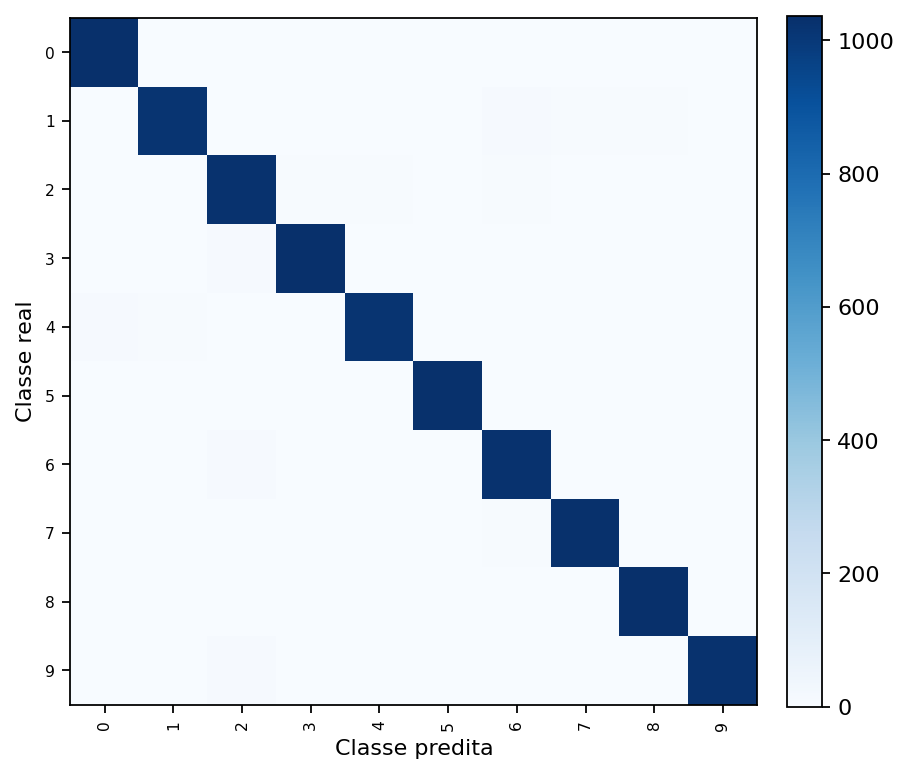
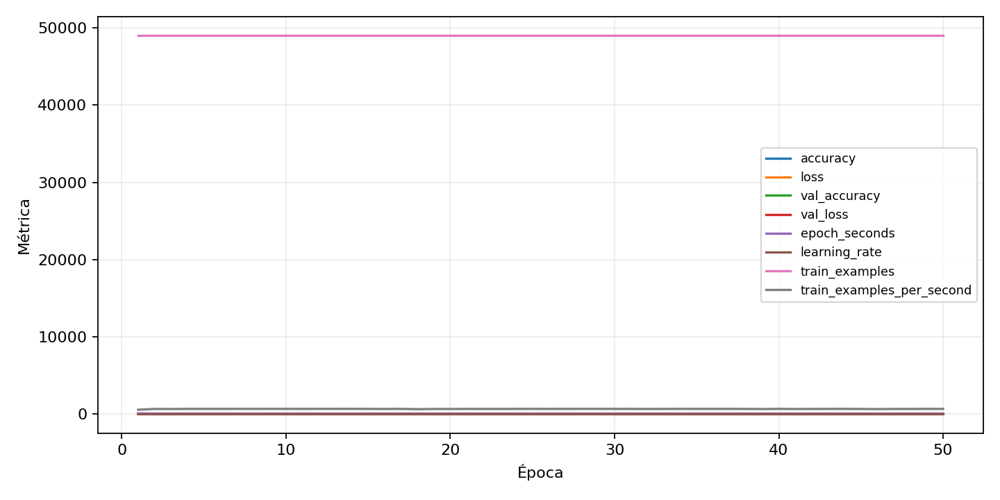

| n_samples | 10500 |
|---|---|
| loss | 0.11004061996936798 |
| accuracy | 0.9797142857142858 |
| balanced_accuracy | 0.9797142857142859 |
| macro_f1 | 0.9797236840143284 |


| Índice | Classe | Suporte | Precisão | Recall | F1 |
|---|---|---|---|---|---|
| 0 | 0 | 1050 | 0.9792256846081209 | 0.9876190476190476 | 0.9834044570886676 |
| 1 | 1 | 1050 | 0.9854791868344628 | 0.9695238095238096 | 0.9774363898223717 |
| 2 | 2 | 1050 | 0.960710944808232 | 0.9780952380952381 | 0.9693251533742332 |
| 3 | 3 | 1050 | 0.9856870229007634 | 0.9838095238095238 | 0.9847473784556721 |
| 4 | 4 | 1050 | 0.9779270633397313 | 0.9704761904761905 | 0.9741873804971318 |
| 5 | 5 | 1050 | 0.982824427480916 | 0.9809523809523809 | 0.9818875119161105 |
| 6 | 6 | 1050 | 0.9688972667295005 | 0.979047619047619 | 0.9739459971577452 |
| 7 | 7 | 1050 | 0.9837940896091516 | 0.9828571428571429 | 0.9833253930443069 |
| 8 | 8 | 1050 | 0.9847764034253093 | 0.9857142857142858 | 0.9852451213707759 |
| 9 | 9 | 1050 | 0.9884615384615385 | 0.979047619047619 | 0.983732057416268 |
{"adapter":"kmnist","balance_mode":"all_raw","class_names":["0","1","2","3","4","5","6","7","8","9"],"dataset":"kmnist","dataset_options":{},"dataset_root":"/home/msduda/datasets-tcc/kmnist","native_channels":1,"normalization":"unit_interval","num_classes":10,"protocol":{"checkpoint_monitor":"val_macro_f1","dtype_policy":"mixed_float16","early_stopping":{"patience":50,"restore_best_weights":true},"evaluation_augmentation":false,"input_channels":"native","optimizer":"Adam","pretrained_weights":false,"reduce_lr_on_plateau":{"factor":0.3,"min_lr":1e-07,"patience":50},"resize":"proportional_padding","test_time_augmentation":false,"training_from_scratch":true},"seed":42,"source_fingerprint":"8928d478d8d23938a73b4f4a92c407bf3d74beff1e0e67e3644d6ecdc30cf828","source_manifest":{"class_names":["0","1","2","3","4","5","6","7","8","9"],"joined_samples":70000,"metadata":{"layout":"kmnist-component-npz"},"name":"kmnist","native_channels":1,"source_path":"/home/msduda/datasets-tcc/kmnist","splits":{"test":10000,"train":60000},"target_size":64},"target_size":64,"test_fraction":0.15,"train_fraction":0.7,"training":{"augmentation":{"brightness_delta":0.0,"contrast_lower":1.0,"contrast_upper":1.0,"cutout_max_frac":0.0,"cutout_prob":0.0,"flip_lr":false,"noise_std":0.0,"translate_frac":0.0,"zoom_max":1.0,"zoom_min":1.0},"batch_size":96,"default_image_size":64,"dtype_policy":"mixed_float16","early_stopping_patience":50,"extra_fraction":0.0,"image_size_overrides":{"gtsrb":128},"keras_verbose":1,"learning_rate":0.0003,"max_epochs":50,"preprocess_cache_max_mib":0,"reduce_lr_factor":0.3,"reduce_lr_min_lr":1e-07,"reduce_lr_patience":50,"shuffle_buffer_max_mib":0},"validation_fraction":0.15}
{"epochs_completed":50,"epochs_recorded":50,"evaluation_seconds":25.986718223000935,"fit_seconds_current_attempt":4370.654192675,"max_epoch_seconds":86.47664866000014,"max_epochs":50,"mean_epoch_seconds":73.53610065533991,"mean_train_examples_per_second":666.8019853521789,"median_train_examples_per_second":670.6714569788833,"min_epoch_seconds":71.9012627000011,"selected_checkpoint":"/mnt/e/tcc-benchmark/outputs/kmnist-alldata-noaug-batch-sweep-2026-08-06/batch-096/kmnist/runs/kmnist__unit_interval__all_raw__seed-42/checkpoints/best.keras","total_seconds":3676.8050327669953,"training_seconds":3676.8050327669953,"wall_seconds_current_attempt":4401.12498545}
{"elapsed_seconds":4401.162104052999,"event_counts":{"data_preparation_end":1,"data_preparation_start":1,"epoch_end":50,"evaluation_end":1,"evaluation_start":1,"fit_end":1,"fit_start":1,"periodic":868,"run_completed":1,"train_start":1},"generated_at":"2026-08-07T06:35:29.789+00:00","gpu_backend":"pynvml","interval_seconds":5.0,"metrics":{"cpu_percent":{"count":926,"max":17.2,"mean":12.627645788336935,"min":0.0,"p50":12.0,"p95":16.7},"disk_data_free_bytes":{"count":926,"max":998270074880.0,"mean":998270009556.3197,"min":998270001152.0,"p50":998270009344.0,"p95":998270013440.0},"disk_data_percent":{"count":926,"max":2.7,"mean":2.7,"min":2.7,"p50":2.7,"p95":2.7},"disk_data_total_bytes":{"count":926,"max":1081101176832.0,"mean":1081101176832.0,"min":1081101176832.0,"p50":1081101176832.0,"p95":1081101176832.0},"disk_data_used_bytes":{"count":926,"max":27838820352.0,"mean":27838811947.680347,"min":27838746624.0,"p50":27838812160.0,"p95":27838816256.0},"disk_output_free_bytes":{"count":926,"max":207385223168.0,"mean":207372034282.43628,"min":207371169792.0,"p50":207371591680.0,"p95":207372446720.0},"disk_output_percent":{"count":926,"max":79.3,"mean":79.3,"min":79.3,"p50":79.3,"p95":79.3},"disk_output_total_bytes":{"count":926,"max":1000186310656.0,"mean":1000186310656.0,"min":1000186310656.0,"p50":1000186310656.0,"p95":1000186310656.0},"disk_output_used_bytes":{"count":926,"max":792815140864.0,"mean":792814276373.5637,"min":792801087488.0,"p50":792814718976.0,"p95":792815042560.0},"elapsed_seconds":{"count":926,"max":4401.10514,"mean":2203.062285730022,"min":0.043987,"p50":2201.129643,"p95":4198.55585925},"gpu_count":{"count":926,"max":1.0,"mean":1.0,"min":1.0,"p50":1.0,"p95":1.0},"gpu_memory_percent":{"count":926,"max":34.52463150024414,"mean":34.281429667709716,"min":29.843664169311523,"p50":34.30643081665039,"p95":34.409427642822266},"gpu_memory_total_bytes":{"count":926,"max":8589934592.0,"mean":8589934592.0,"min":8589934592.0,"p50":8589934592.0,"p95":8589934592.0},"gpu_memory_used_bytes":{"count":926,"max":2965643264.0,"mean":2944752385.658747,"min":2563551232.0,"p50":2946899968.0,"p95":2955747328.0},"gpu_temperature_c":{"count":926,"max":50.0,"mean":42.470842332613394,"min":37.0,"p50":42.0,"p95":48.0},"gpu_utilization_percent":{"count":926,"max":98.0,"mean":21.257019438444924,"min":0.0,"p50":27.0,"p95":41.75},"process_cpu_percent":{"count":926,"max":218.7,"mean":162.77365010799136,"min":0.0,"p50":153.7,"p95":212.8},"process_read_bytes":{"count":926,"max":11792384.0,"mean":11764490.505399568,"min":7933952.0,"p50":11792384.0,"p95":11792384.0},"process_rss_bytes":{"count":926,"max":4032565248.0,"mean":3762973538.9719224,"min":1029701632.0,"p50":3755900928.0,"p95":4015719424.0},"process_vms_bytes":{"count":926,"max":50004660224.0,"mean":49636486137.36501,"min":39580274688.0,"p50":49719083008.0,"p95":49937551360.0},"process_write_bytes":{"count":926,"max":1392640.0,"mean":1379325.7883369331,"min":4096.0,"p50":1392640.0,"p95":1392640.0},"ram_available_bytes":{"count":926,"max":15528062976.0,"mean":12954485196.025917,"min":12686254080.0,"p50":12965507072.0,"p95":13542972416.0},"ram_percent":{"count":926,"max":23.7,"mean":22.054211663066955,"min":6.6,"p50":22.0,"p95":23.6},"ram_total_bytes":{"count":926,"max":16619077632.0,"mean":16619077632.0,"min":16619077632.0,"p50":16619077632.0,"p95":16619077632.0},"ram_used_bytes":{"count":926,"max":3932823552.0,"mean":3664592435.974082,"min":1091014656.0,"p50":3653570560.0,"p95":3917373440.0}},"sample_count":926,"schema_version":1}